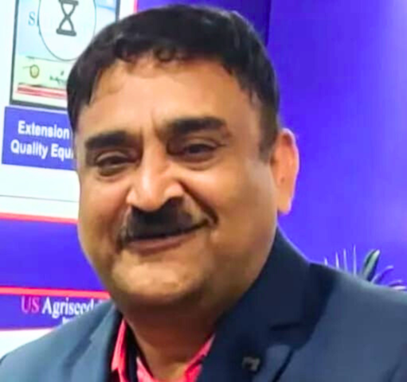

President – Supply Chain | CXO Leader | Seed & Agri-Business | AI & Digital Agriculture | Sustainability | Independent Director

Raja Vadlamani is a senior seed and agri-business supply-chain leader with almost four decades of professional experience across seed production, processing, storage, planning and distribution.
He has spent nearly two decades with SeedWorks, helping build and evolve supply-chain capabilities across the seed value chain.
His leadership journey has progressively moved from physical operations and supply-chain execution toward digital systems, predictive analytics and artificial intelligence in agricultural decision-making.
His current interests sit at the intersection of agriculture, AI, sustainability, climate resilience and governance.
A career shaped by the evolution of agricultural supply chains — from hands-on operations and physical infrastructure to digital systems, artificial intelligence, climate resilience and governance.
The foundation was built close to the operation — understanding production, processing, inventory, movement of material and the realities of agricultural supply chains.
Over nearly two decades at SeedWorks, the focus has been on building and strengthening supply-chain capabilities across seed production, processing, storage, inventory planning and distribution.
The next evolution connected operational processes with enterprise systems, digital workflows, traceability and data. The objective moved beyond digitising transactions toward creating better visibility and stronger decision-making.
The focus expanded toward artificial intelligence, machine learning and predictive analytics for agricultural decision-making — including seed production planning, yield prediction, demand forecasting and supply-chain optimisation.
Today the journey is expanding beyond operational transformation toward the broader question of how technology, climate intelligence, resource efficiency and governance can reshape the future of agriculture.
End-to-end supply-chain strategy covering production, processing, storage, inventory and distribution.
Predictive analytics, machine learning and decision-support systems for agricultural operations.
Satellite-enabled remote sensing, crop monitoring, field intelligence, weather data, traceability and connected agricultural systems.
Resource efficiency, climate resilience, carbon measurement and sustainable agriculture.
Converting operational challenges into scalable processes, systems and measurable outcomes.
Cross-functional leadership, strategy, governance and executive decision-making.
The evolution of agricultural supply chains: from physical movement of material toward connected, predictive and climate-aware decision systems.
Selected initiatives where physical infrastructure, agriculture, technology, analytics and sustainability come together to shape the next generation of seed supply chains.
A next-generation integrated seed processing and cold-storage complex being developed in collaboration with Prasad Seed Farms.
SAMGRA brings together advanced seed processing, controlled cold storage, modern material handling, process integration and automation within an integrated infrastructure platform designed for scale, quality, efficiency and operational control.
The project represents a shift from conventional standalone processing and storage toward an integrated, technology-enabled seed infrastructure model.
Selected professional recognitions, industry acknowledgements and published contributions reflecting a career at the intersection of supply chain, agriculture, innovation and transformation.
Combining deep operating experience with formal governance education and an interest in strategic oversight.
AI's Quiet Revolution in Seed Supply Chains
A perspective on how artificial intelligence can quietly transform planning, operations and decision-making across the seed value chain.
Exploring the future of seed systems through AI, digital agriculture, sustainability, resource efficiency and new operating models.
Open to conversations around seed and agri-business leadership, strategic transformation, AI-enabled agriculture, sustainability, advisory opportunities and independent director engagements.